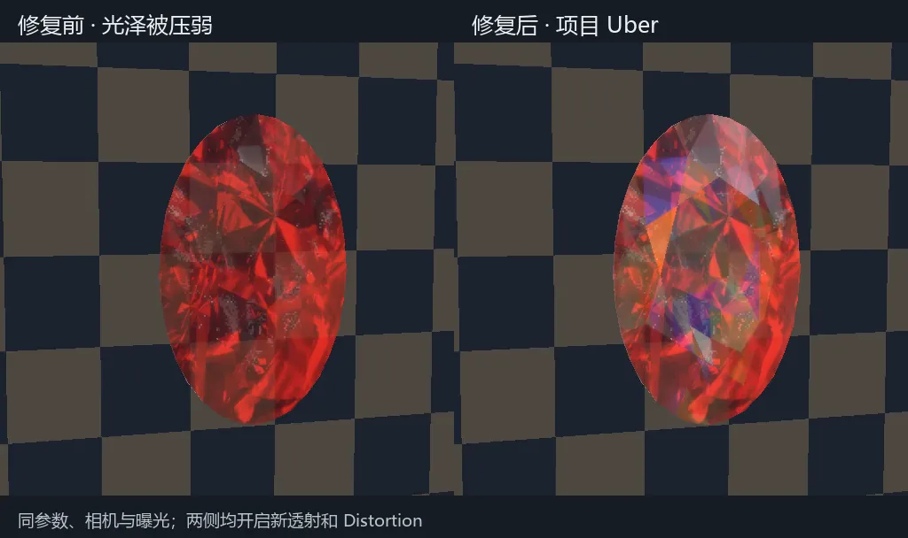

渲染空间角色渲染工作台
把 MMD / PMX 角色的导入、材质、灯光、动作、物理和输出放进同一个 Blender 工作台，让一次调好的画面能被继续调整、预览和交付。

王世明，技术美术。做角色渲染 Shader、TA 工具，以及让画面能够稳定产出的 DCC 渲染流程。
移动指针就是移动主光，拖动可以转动宝石。向下滚动，它会被一步步拆开。
每个效果都是一段在浏览器里实时运行的着色器。卡片显示最终画面，点开后可以逐步查看中间通道、对应公式和代码。这些演示依据原理重新编写，用来说明算法，并非原项目画面。
三个与渲染相关的项目和一个 AI 应用。项目里的技术点都链接到上面实验室中的演示。
把 MMD / PMX 角色的导入、材质、灯光、动作、物理和输出放进同一个 Blender 工作台，让一次调好的画面能被继续调整、预览和交付。
沿着一帧画面的路径，把一套定制 HDRP 的角色渲染拆成 16 章可以查阅、定位和讨论的分析：从管线结构、光照模型，到皮肤、头发、眼睛、描边、阴影和后处理。
MMD 的动作与镜头决定三维动画；Blender 一次渲染出透明人物与深度、法线、遮罩控制图；AI 只在深度约束下做低强度精修，再合成背景、编码成片。动作与镜头的控制权留在三维链路里。
故事阅读、角色对话与状态管理共同构成体验：记录读到哪里，允许读者在任意位置插话，再依据状态切换分支或继续叙事。
负责部分美术资产、渲染效果及代码框架与模块逻辑：用 URP 构建 NPR / PBR 风格化渲染，以预积分贴图实现角色皮肤的次表面散射，并用四叉树剔除优化场景。
真实渲染的录屏。悬停或点按播放。素材的来源、个人贡献与公开授权仍在逐项核对。
每一轮都在同网格、同镜头运动、固定曝光的条件下做左右对照，只改变一项。
西安工业大学数字媒体艺术（数字娱乐方向）本科，2026 年 5 月起在广州诗悦网络科技担任技术美术，从事角色渲染 Shader、角色 TA 工具、资产检测与流程工具开发，以及 DCC 渲染平台的开发维护。
我关心一个角色怎样被照亮，也关心一张画面怎样从材质、灯光和动作，走进可以重复的制作流程。